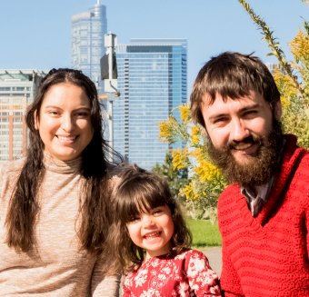

Personal info
Please help yourself to these facts about me!
- I go by William, not Will/Bill/etc. (Students: Please call me either William or Professor Hoza, whichever makes you more comfortable.)
- I'm ? old.
- I've been happily married to Alicia Torres Hoza for ?.
- We have a wonderful daughter 🙂 We also had two other children who, tragically, died before birth.
- I'm about 5' 5" tall, much like the average man in North Korea or the average woman in Sweden.
- I have Celiac disease, so I cannot eat gluten. Also, I try to avoid eating meat on Fridays, and I try to avoid eating pork or beef on any day of the week, but sometimes I make exceptions to these rules.
- I like pineapple on pizza, and I like the Star Wars prequel trilogy, but I don't like chocolate.
- I enjoy computer programming as a casual hobby.
Some of my favorite things
- Colors: Green; orange; pink
- Complexity classes: $\mathsf{BPL}$; $\mathsf{AC}^0$
- Foods: Chicken; mandarin oranges; pizza
- Inequalities: Markov's inequality; Jensen's inequality; Hoeffding's inequality; $1 + x \leq e^x$
- Movies: 12 Angry Men (1957)
- NP-complete problems: Undirected Hamiltonian Cycle; Subset Sum; 3-Colorability
- TV shows: Avatar: The Last Airbender
- Paradoxes: Curry's paradox; Galileo's paradox; Moore's paradox
- Greek letters: Lowercase epsilon ($\varepsilon$); lowercase delta ($\delta$); lowercase lambda ($\lambda$)
- Board games: Boggle; Pictionary; Blokus
- Polyhedra: Tetrahedron; icosahedron; cuboctahedron
- Books: I, Robot (Isaac Asimov)
- Boolean functions: Parity; majority; tribes
I have an amateur interest in philosophy. I wish I knew more about it. Some of my philosophical opinions are listed below.
Philosophical views
- I'm Catholic.
- I think that every living human organism has moral personhood.
- I favor compatibilist views about free will and determinism. (Here's a relevant blog post.)
- I favor Bayesian interpretations of probability.
- I favor B-theorist accounts of time.
I also list some of my political views below. People tell me that it's foolish to have this list on my website, and maybe they're right. However, I believe that each of us has a civic duty to advocate for just and wise policies. Instead of a culture in which politics is a taboo subject, I would like to cultivate a culture in which we all respect each other and work together despite passionate disagreements. (For example, I am certainly happy to mentor students who oppose my political views.)
Political views
⚠️Whether you lean "left", "right", or some other direction, you are probably going to disagree with me about some of this stuff. I hope we can still be friends! Please trust that I want us all to thrive. I'm sure there are many things I'm wrong about.
- I support serious government interventions to mitigate and prevent climate change. I'm in favor of taxing carbon emissions from fossil fuels and rapidly increasing the taxation rate to phase out fossil fuels entirely. I'm not talking about a blanket carbon tax; I think a different system would be more appropriate for regulating carbon emissions from non-fossil-fuel sources such as livestock and biofuels.
- I support a ban on the destruction of human embryos in laboratories, such as in the context of stem cell research or in vitro fertilization. I think we all have dignity and value that doesn't depend on the circumstances of our conception, and I respect persons conceived in vitro as equals, whether they are embryos or adults.
- I favor making it very easy to legally immigrate to the U.S. I want the border between the U.S. and Mexico to be similar to the border between Texas and New Mexico. I don't think any special excuse or reason should be required to become a U.S. citizen.
- I support a ban on abortion. I think we should use nonviolent methods to support pregnant women. I support government-funded pregnancy centers, and I think the government should ensure that all employed new mothers have access to paid maternity leave. (Here's a relevant blog post. See also: What's My Pro-Life Line?)
- I favor abolishing capital punishment. I also think the prison system is greatly overused. People who commit crimes should face consequences, but years of imprisonment is extreme.
- I favor making adultery illegal, at least in cases where the non-participating spouse disapproves. More generally, I think that married people should have greater legal obligations toward their spouses. I think marriage is more than a contract; it seems to me that the law currently treats it as less than a contract.
- I favor giving every citizen the right to vote, regardless of age or criminal history. Yes, I'm serious, regardless of age. (Here's a relevant Vox article.)
- I support a ban on physician-assisted suicide and all forms of euthanasia.
- I support robust government programs to support homeless people, low-income people, and other vulnerable populations.
- I support constitutional originalism. I think the Constitution has room for improvement. I favor clearly distinguishing between improvements that could potentially be made and improvements that actually have been made. I think the legitimate way to change the Constitution is to use the amendment process described in Article V of the Constitution itself.
- I oppose torture. More generally, I oppose almost all violent actions performed by the U.S. military. I am grateful for the service of those members of the military who honorably and ethically defend the country.
- I favor repealing the second amendment.
- I support an expansive right to freedom of speech. I think that in most cases, the best response to objectionable speech is respectful dialogue and persuasive counterspeech rather than punishment, censorship, or ostracization.
- I oppose efforts by the NSA to weaken widely-used cryptographic software.